Lead
Onboarding
Sign In
Quickhands Logistics logo will appear on the top with the illustration image. 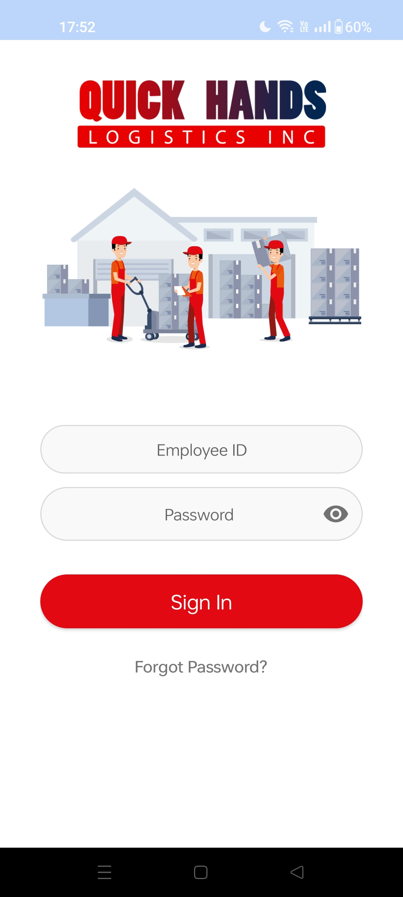
- Cursor is placed on the employee ID field by default, placeholder would be in grey color for the fields.
- Enter the valid employee ID and password(can click on the eye icon to show & hide the entered password) and click on sign in, you'll be logged into the application 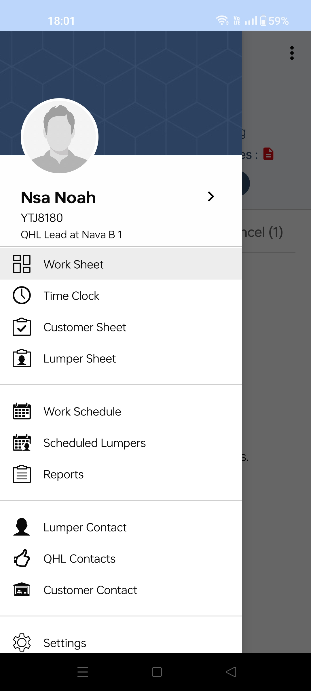
- If both the fields are left blank, will throw a validation message "Please enter Employee Id"
- If the employee ID or password field is left blank and clicked on sign in, will throw a validation error message as "Please enter Employee Id" and "Please enter Password" respectively
- If wrong employee ID or password is entered, will throw the notification as "Invalid employee ID or password"
Forgot Password
- As you click on the forgot password button, will redirect you the screen to enter the employee ID in order to receive the reset password email. Quickhands Logistics logo will appear on the top with the illustration image.

- Following text appears above the employee ID field "Enter the following information to receive an email with a link to reset your password."
- Reset Password button is activated before the employee ID is entered.
- If you leave the field blank and click on the reset password button, will throw a error message as "Please enter Employee Id"
- When you enter the wrong, correct employee ID and click on the button, will show the success message in the pop up as "Reset Password link has been sent.Please check your email" Once you click on the ok button, will redirect you to the sign in page. 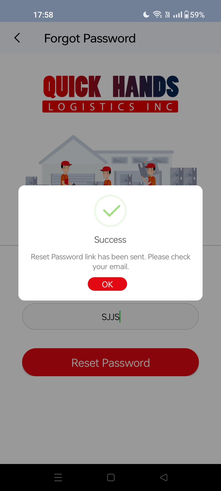
Reset Password
-
Below is the email template with the link to reset your password From: QHL Support Subject: Reset Password
Hi [user's first name], Please use the link below to reset the password for your account. Click here to reset your password *Link access will expire in 48 hours. Thanks Quick Hands Logistics -
The link is valid for 48 hours
- Password should follow the format of minimum 8 characters that includes 1 Uppercase, 1 Lowercase, 1 Special Character, 1 Number, else will throw a validation message
- Reset button will be disable until the information is entered
- Will throw a validation error message if the passwords do not match
- If click on cancel button, will redirect you back to the sign in page
- To show the field is active and cursor is placed on the field, placeholder would be in blue color, otherwise in grey color.
- As you click on reset button, will throw a success notification "Password has been updated" and redirect you to the screen.
- Below is the template user receives when they set their password
From: QHL Support Subject: Password Updated Hi [user's first name], Your password has been successfully updated! (link to home page of sing-in page here) Thanks, Quick Hands Logistics"
Logout
A confirmation pop up opens when you click on the logout from side navigating tab. As you select yes, the employee will be redirected to sign in screen. As you select no, employee will be redirected to the screen he was present at. 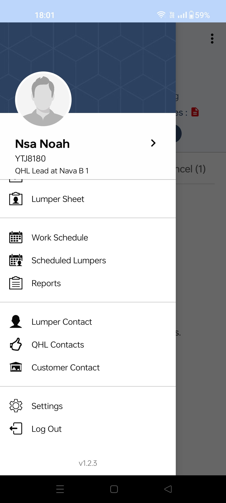 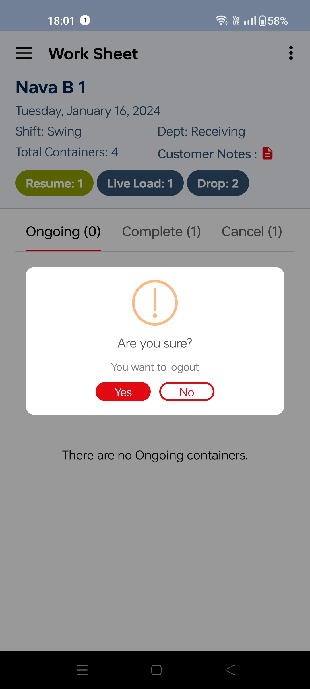
User Profile
As you cliCk on the arrow on the top beside the logged in person name, you'll be redirected to the profile details 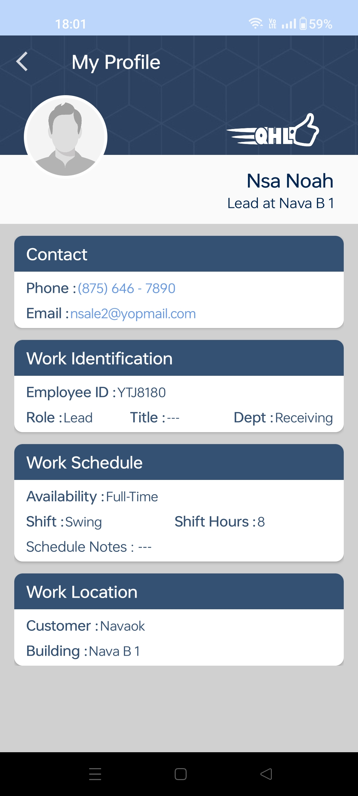
- QHL LOgo will appear on the top with the cubic images
- Profile image will appear if the lead has uploaded, if not then the default image will appear
- Name of the lead appears
- Role with the associated building name appears in the second line
- In 4 different card section, the lead information appears
- First section is Contact which includes phone number and email of the lead
- Second section is Work Identification which includes employee ID, role, title(if there is no information "---" will appear) and Department
- Third section is Work Schedule which includes the availability, shift, shift hours and schedule notes(if there is no information "---" will appear)
- Fourth section is Work Location which includes the customer and building name
- Through the back button beside the title name, user can revert to previously selected section
Work Sheet
This section appears for the current today's date to show the scheduled work if any, to add any container and take action on the scheduled container
Landing Page
Title appears on the top as Worksheet with the three menu buttons on right. Building details appears below the title which includes building name, complete today's date with buildings shift, department. Total container scheduled for today appears with count and customer notes if saved any while creating a schedule.
When no containers are scheduled then blank page appears as shown in image. 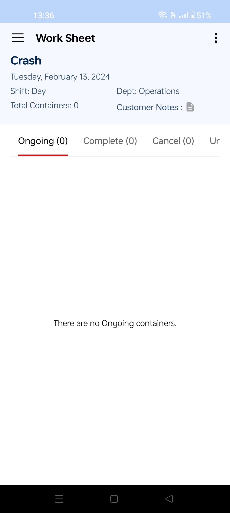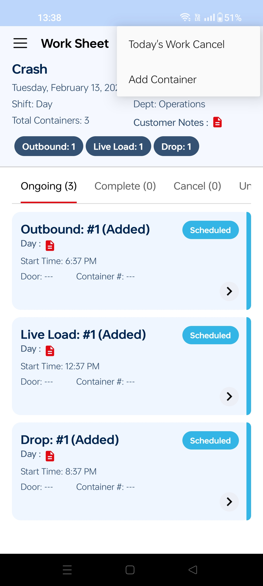
Once the container have been scheduled either by customer's contact or lead, they start coming in the listing with status in various tabs. Each container card can be clicked and redirects you to the container detail page which are explained further in detail
- Ongoing - When the containers are scheduled, they appear under this status with the total count of container
- Complete - When the work done on the container is completed, they appear under this status with the total count of containers
- Cancel - When the container have been cancelled by lead or contact, they appear under this status with the total count of containers
- Unfinished - When the work done on the container is not complete and partially done, they appear under this status with the total count of containers
- Not Open - When the container have been given not open, they appear under this status with the total count of containers
Add Container
When there are no schedules then the lead can create one by adding the containers. When the schedule is already created, lead can add more containers which will be creating a new schedule on the admin & customer portal.
- Mandatory to add time for containers
- Add button remains disable until at least one container haven't been scheduled with quantity & date
- Once you select on '+' icon, section expands to enter quantity & time
- Can click on blue cross icon from expanded layout to remove the particular container
- Can enter schedules notes if any and not a mandatory field
- Once the container has been added, a informative pop up opens with the information about what is being added which includes count with container type aith the time
- Clicking on cancel would revert to the add container section
- By clicking on back button, a pop up opens to discard the information & leave.
- 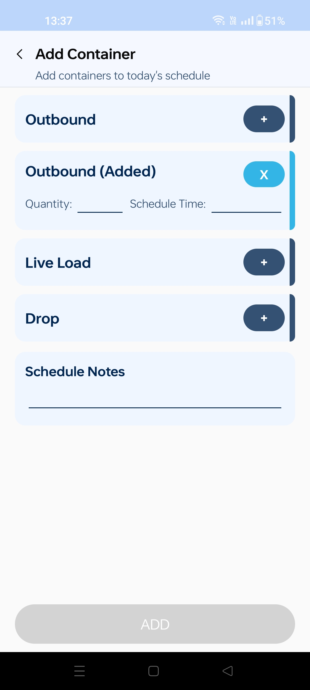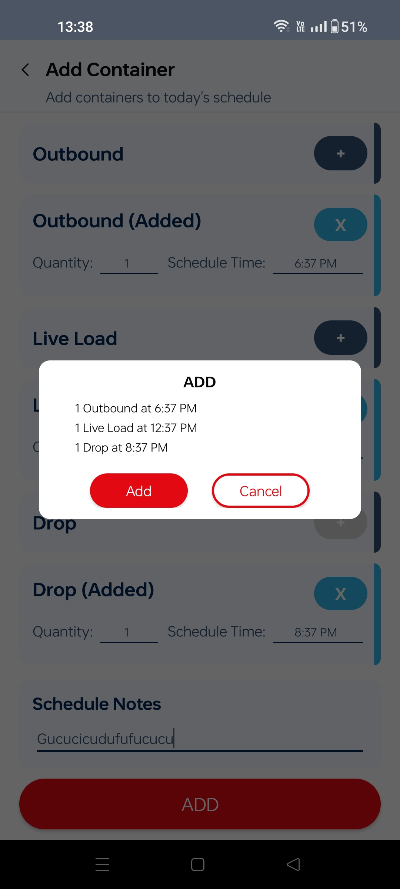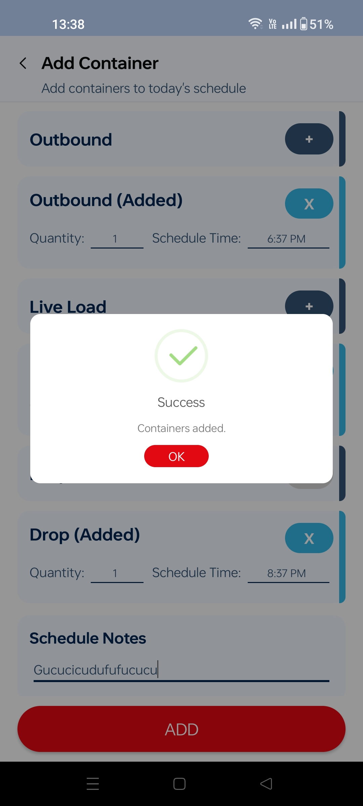
Today's Work Cancel
After 'Save' button is pressed on 'Today's Work is Cancel' page
- the status on all schedules containers changes to cancel.
- all containers (with cancel status) should move to the Cancel (tab) screen.
- Notes added in 'Today's Work is Cancel' should appear as Group Notes in the cancel (tab) screen
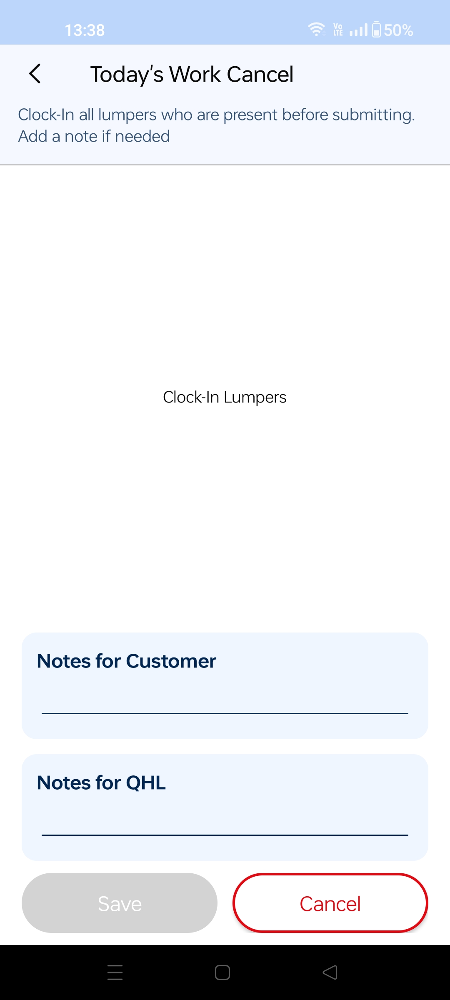
Container Detail
- Parameters Tab
- 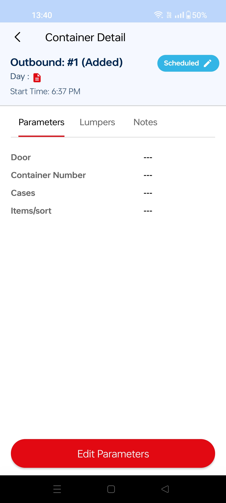
- Edit Parameters
- 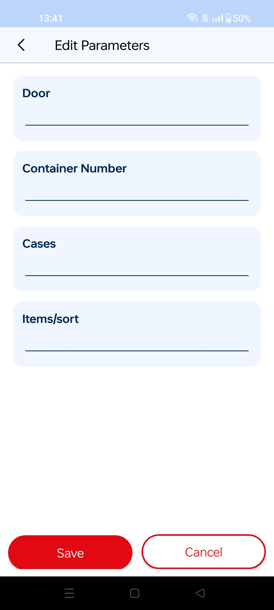
- Lumpers
- 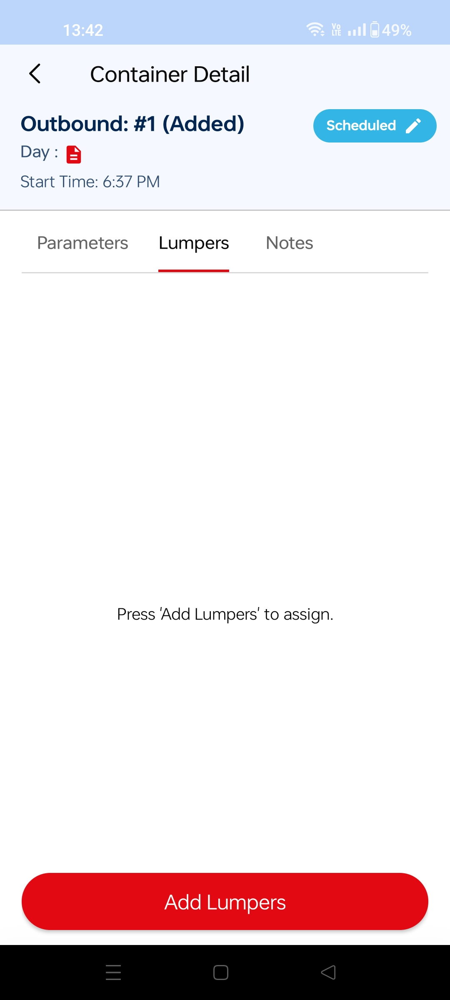
- Add Lumpers
- 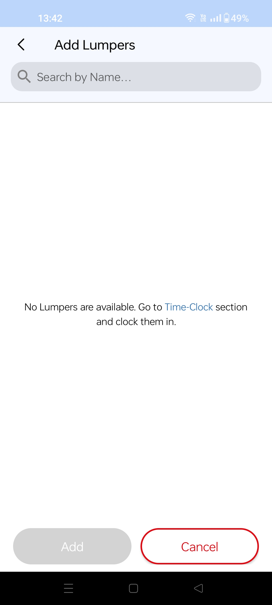
- Notes 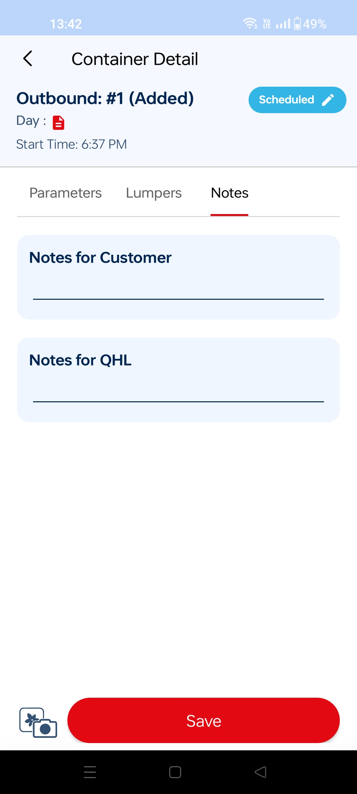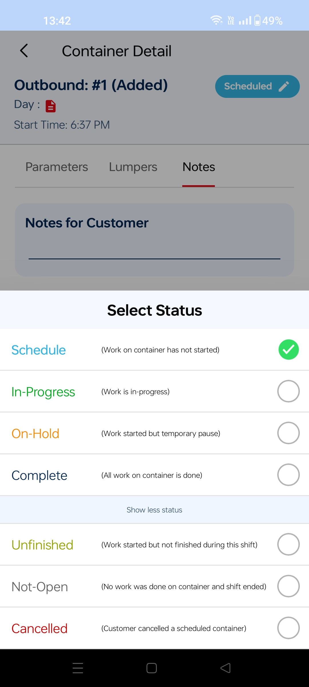
Time Clock
This section serves as way to record reporting time of employees. By default the assigned main lead card appears. All the employee who are have clocked in to work upon the container appears below which includes, assigned main lead & lumper, requested & temporary lead & lumper. The red color ring appears for temporary lumper and purple color ring for requested lumpers.
Landing page
- Title appears on the top as Time Clock with the current day and date.
- In the next section a horizontal scrollable calendar appears with the day & date
- By default, current date is selected.
- Previous Date appears in orange when the clock in information is saved for that day but clocked out isn't
- Previous date appears in bold when the the clock in & clock out information is saved for the date
- By default, lead card appears to add the reporting time information
- When multiple employees are scheduled, they will appear one below the other
- Card Information includes; Lead Name, employee ID and the clocked & lunch timings with the profile image. Can add notes
- Each card has a checkbox beside the name to individually or together to enter time. 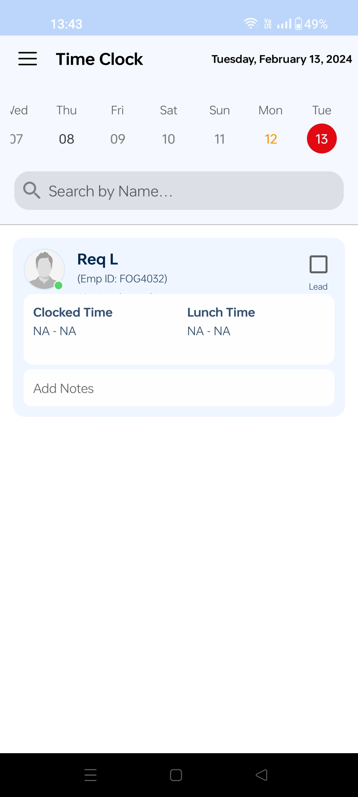
- Add Time
- By clicking on the add time button, a pop up appears to add the time by clicking on respective buttons 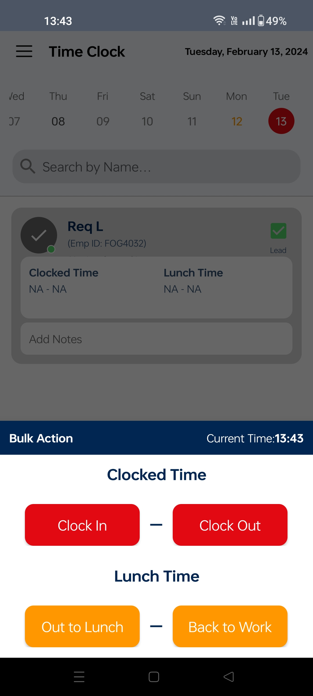
Customer Sheet
When there are no containers with scheduled status and all have been given their respective status then the customer sheet has to be signed.
Landing Page
- Title appears as customer sheet with building name below it.
- A calendar box to pick the desired date for viewing the customer sheet
- Cannot select future dates
- Before the details of customer sheet appears, total containers count appears above that section
- A signature button appears to sign the sheet
- Remains non clickable when there are no containers that have moved from ongoing to any other state 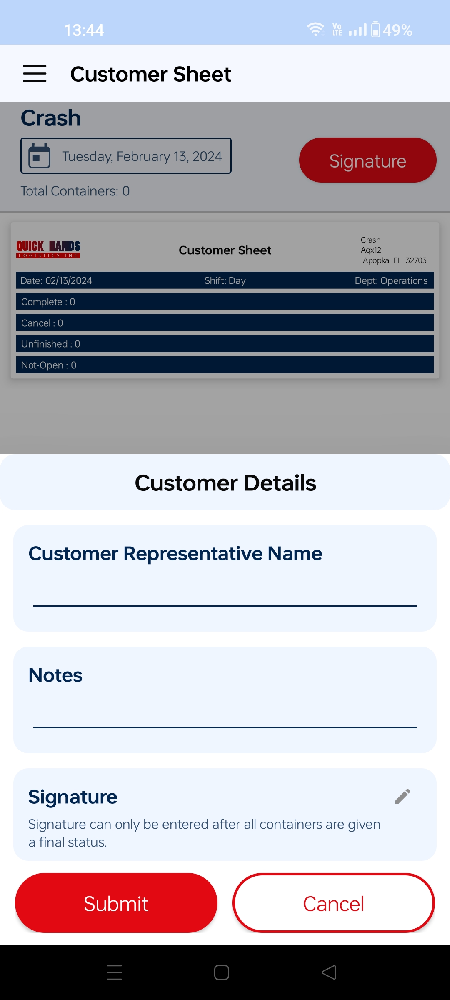 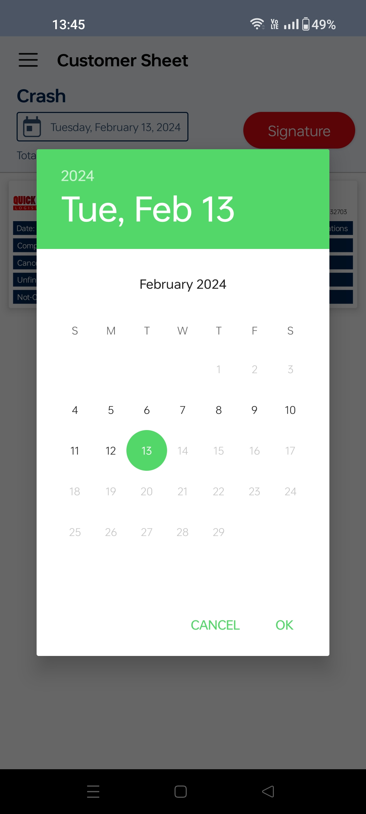
- Customer sheet section includes the following details when there is no work done a shown in the image 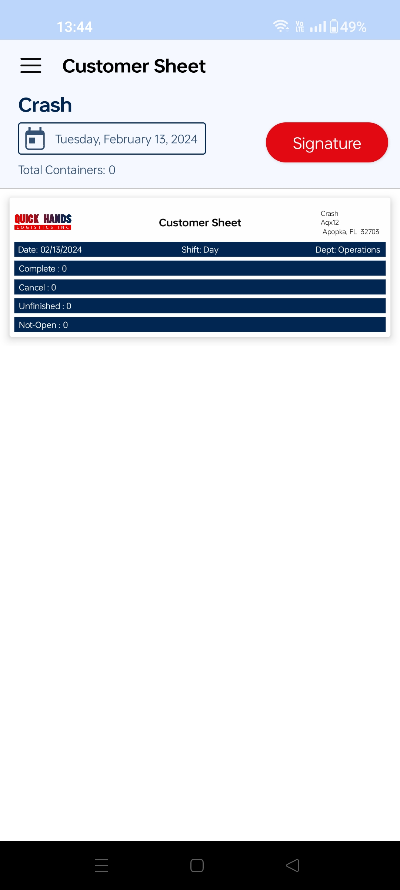
- Customer sheet section consists of
- the logo, title & building details (name & address)
- The date
- Since today's date is selected by default then the current date appears
- When the previous dates are selected, the date changes with respective to filter applied
- Shift & department appears
- All the status with count of container appears; when there is work done for the container and moved under this status
- After the sheet has been signed, customer section appears with the signature, saved representative name and notes
- signed button is disable once the customer sheet has been signed
Lumper Sheet
Once the employee is scheduled to work on the container, their information appears on this section. After the work on the schedule is completed, lumper sheet have to be signed before the lead signs the customer sheet. All the employee who are selected to work upon the container appears below which includes, assigned main lead & lumper, requested & temporary lead & lumper. The red color ring appears for temporary lumper and purple color ring for requested lumpers.
Landing Page
- When there are no records then this section appears. 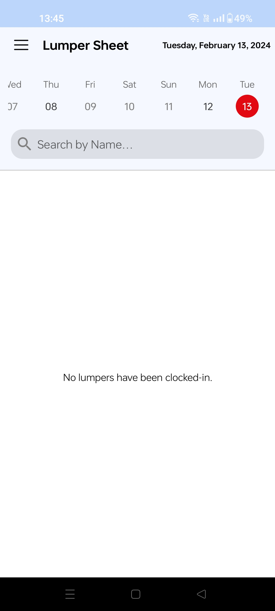
- In the next section a horizontal scrollable calendar appears with the day & date
- By default, current date is selected.
- Previous Date appears in orange when the clock in information is saved for that day but clocked out isn't
- Previous date appears in bold when the the clock in & clock out information is saved for the date
- Can search by employee name
- Once the lumpers have been scheduled to work on the container, their information appears which includes employee name, employee ID and role with the profile image. Below status appears beside the lead name.
- Pending when the lumper sheet have not been signed
- Signed when the lumper sheet has been signed
- Employee name is clickable and redirects to lumper work detail
- Submit button is activated after signing all the sheets for employees
Lumper Work Detail
Title appears as lumper work detail with the day and date. The page is divided into various sections - For the first section; Employee name appears on top with employee ID and profile image. - For the second section; signature is shown, which is editable through the pop up - Adding the signature opens a screen to enter the sign - For the third section; clocked in information with notes is shown which is editable through the edit icon - For the fourth section, each container is shown separately with their details as below - The container Name with #count and added with the status beside - Besides shift name - note appears, is red when the notes are saved - Request Correction- a clickable button that redirects you to the pop up to enter information that needs to be approved by admin/DM. - Lumper Parameters - all the lumper parameters appear such as work time, pause time, waiting time & the work done, which is editable through the pop up - Notes for QHL - N/A appears when no notes are saved, which is editable through the pop up - Container Parameters - all the parameters for the building appears - Notes for Customer - N/A appears when no notes are saved.
Work Schedule
Landing Page
As you click on the work schedule section through the side navigating tab, you are redirected to the landing page. The title of the section with the current day and date appears on the top. The page is divided into various sections as listed below. The red color ring appears for temporary lumper and purple color ring for requested lumpers. 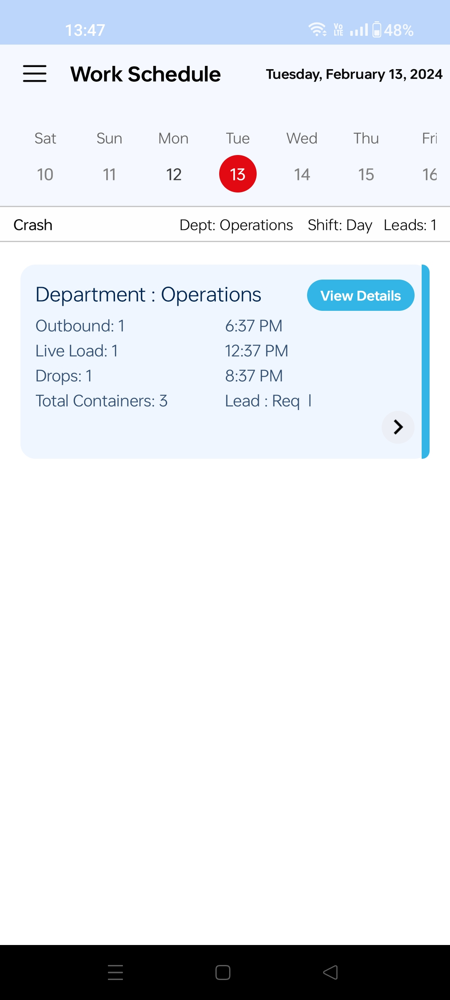
- The first section consists of previous and upcoming days with their date which is scrollable up to 10 days
- The current date selected will be highlighted with red circle on the calendar scroll.
- The previous days where work was scheduled for, will be highlighted with orange color
- The upcoming days where work is scheduled for including the current date(when clicked on an upcoming date), will be highlighted with blue color
- The second section shows building name, shift, department and the number of leads
- The third section shows the information related to schedule in the card layout, when clicked on the forward arrow icon, will redirect you the schedule details page
- Number of container added with their type (outbound, Live load, Drop)are added if any and then the number of total containers will be shown below them
- Scheduled hours depending upon the number of containers added will be shown since it is not mandatory to be same
- Lead name will be shown
- Clickable view details blue button will be shown for the current and upcoming schedules, redirects you to the work schedule detail page
- Clickable pending yellow button will be shown, redirects you to the work schedule detail page
- If the workers are scheduled for the current or have worked on the previous schedules, their profile icon will appear
- If there is no scheduled information then 0 will appear under the department name for total containers with the lead name
Work Schedule Detail
Shows the information for the selected date with the status. Similar to the work sheet landing page. Container type with count appears on the top header section. Can update the details of the container type such as status, parameters, work done information.
Scheduled Lumpers
As you click on the scheduled lumpers section through the side navigating tab, you are redirected to the landing page. This section is to schedule employees who are assigned lumper, requested or temporary lead & lumper. The red color ring appears for temporary lumper and purple color ring for requested lumpers.
Landing page
The title of the section with the current day and date appears on the top.
The page is divided into various sections as listed below.
- The first section consists of previous and upcoming days with their date which is scrollable up to 10 days
- The current date will be selected and highlighted with red circle on the calendar scroll.
- The previous days where work was scheduled for, will be highlighted with yellow color
- The upcoming days where work is scheduled for including the current date(when clicked on an upcoming date), will be highlighted with blue color
- The second section consists of search bar where we will show the results based on the employee name entered
- The third section shows building name, shift, department
- The fourth section shows the view work scheduled with a calendar icon, when clicked opens a pop up with schedule information with the status
- The fifth section shows employee name with the information related to the employee in the card layout.
- Scheduled lumpers and Request lumpers buttons will be shown at the bottom of the landing page.
- If lumpers are not scheduled in this case "No lumpers scheduled" message will be shown on the landing page.
- The schedule lumpers & request lumpers button appears only for the current and future dates
Schedule Lumpers
When we click on the schedule lumpers button, the choose lumpers appears as the title for the page with all the employee that are assigned to the building as either main lumper , temporary or requested lumpers. Once the lumpers are scheduled, they will start appearing on time clock page. 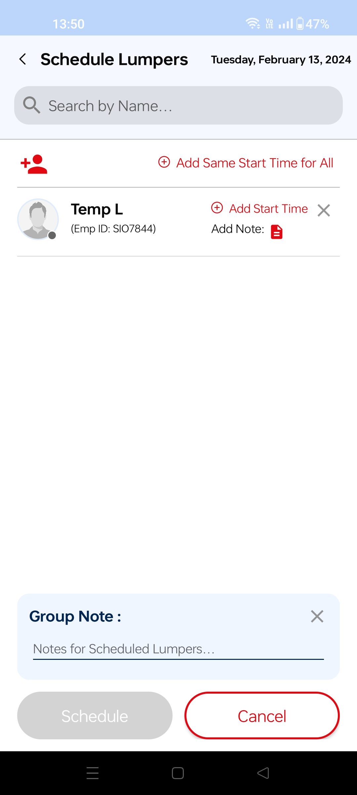 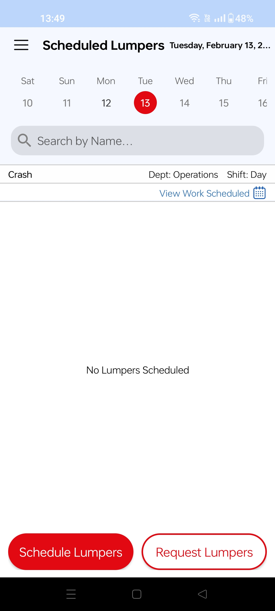 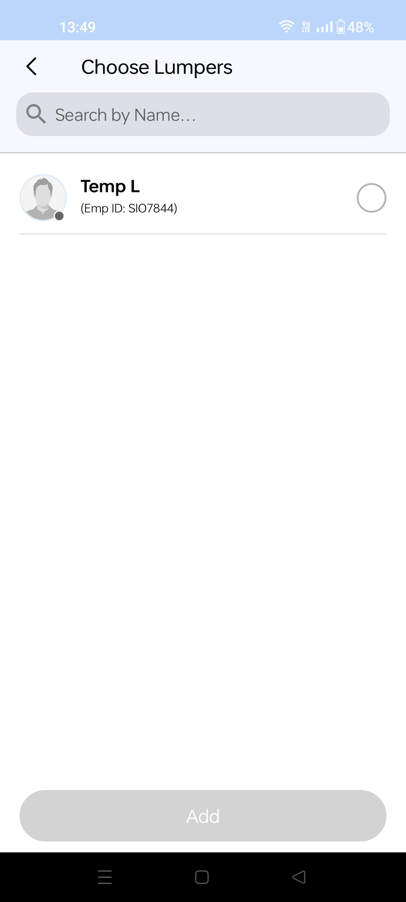
- A search bar appears below the title where we will show the results based on the employee name entered
- Card information which include's employees name, employee ID.
- Can select the desired employee to the schedule by selecting the round checkbox
- Add button becomes activated once you have selected at least one employee, redirects you to the schedule lumpers page to add start time & notes
- Can either add the start time separately or together for all by clicking on the button
- Can click on the red add profile image to schedule lumpers, redirects you to choose lumpers screen
- Can add group note for scheduled lumpers
- Schedule button is activated once you have entered the start time
- Clicking on cancel throws a pop to either discard information & leave or to cancel
Request Lumpers
Based on the future selected date, the request will be shown and can be generated for an additional lumpers.
- Title of the page appears as the Request Lumper with the date
- Total requested appears with the count of requests fro the selected date
- If the Admin or DM have assigned the employee to the request then their count appears with the text "Lumpers DM has Assigned"
- When there are no requests for the selected date, then the blank screen with message appears
- Once the request has been generated their information appears as
- New Request - button redirects to the pop up to enter the details of the information needed which includes
- Count of the additional lumpers needed
- Notes for the QHL district manager to be entered
- Start time - future time to be chosen as for the passed time requests on the admin or DM portal would come under expired.
- Notes for requested lumpers to be entered
- Clicking on submit will create the new request 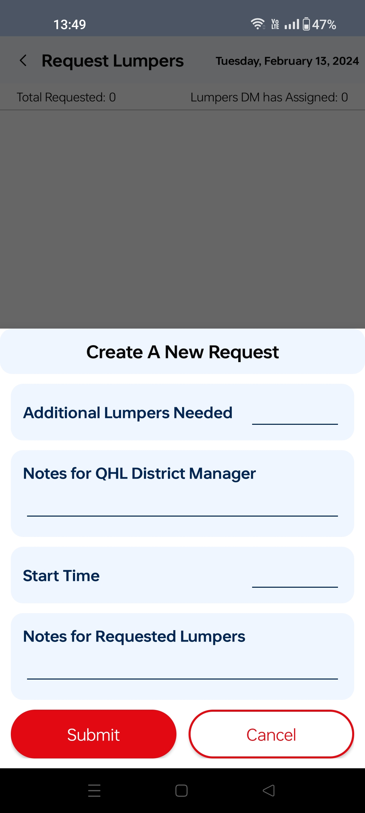
- Clicking on the cancel would redirect to the schedule lumpers page
Reports
Landing Page
Reports for various section appears such as for time clock, lumper sheet and customer sheet. When clciked on any particular will redirect to their item selection page. The red color ring appears for temporary lumper and purple color ring for requested lumpers. 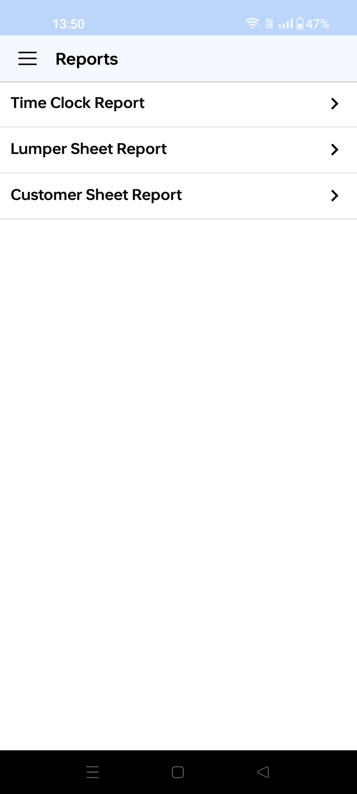
Time Clock Report
- Can select date range by selecting from the following; the day, week, month or custom
- Can select date ranges by opening the calendar
- Can select the report type from pdf or excel
- By default the pdf will be selected
- Can search by name
- The employees name will appear and can select either all or selective for generating the report
Lumper Sheet Report
- Can select date range by selecting from the following; the day, week, month or custom
- Can select date ranges by opening the calendar
- Can select the report type from pdf or excel
- By default the pdf will be selected
- Can search by name
- The employees name will appear and can select either all or selective for generating the report
Customer Sheet Report
- Can select date range by selecting from the following; the day, week, month or custom
- Can select date ranges by opening the calendar
- Can select the report type from pdf or excel
- By default the pdf will be selected
- Can search by name
- The building name will appear and which will be automatically selected for generating the report
Lumper Contact
- The red color ring appears for temporary lumper and purple color ring for requested lumpers.
- On the top page title is mentioned with the QHL Thumb logo.
- Can search by the lumper name, as you enter the first alphabet the results will start populating below.
- All the lumpers that are scheduled or assigned for the building will appear with their name and employee ID.
- Can call on their number by clicking on the phone icon.
- Can send the a text message by clicking on the message icon. As we click on the button, a pop up opens for writing the message. Clicking on send will send the message on lumper device as a sms. Clicking on cancel will revert to the previously selected page 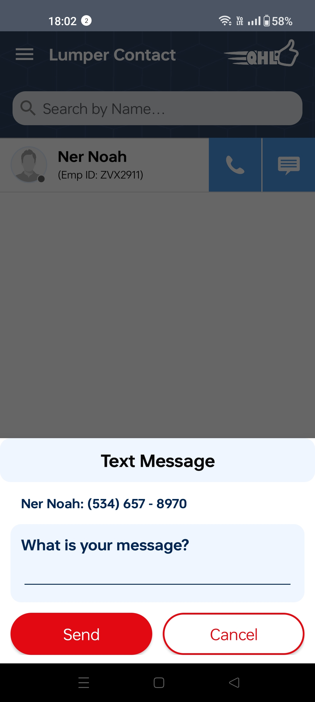
QHL Contacts
As you click on the QHL contacts from side navigating tab, you'll be able to view the information related to the associated employee. QHL Logo appears on top. Associated employee(DM & Lead) and qhl office information appears one below the other, the card information has the following details as seen in the image. 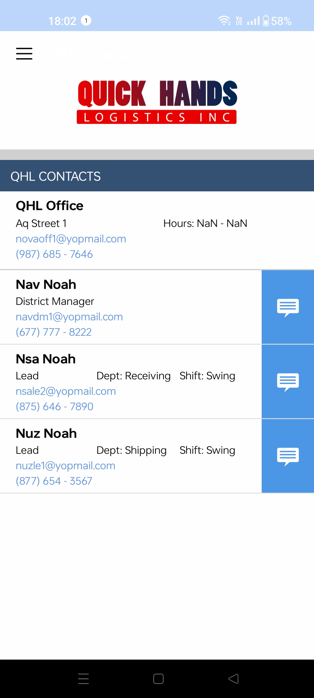 - Name of the employee, QHL Office - Hours - for the QHL Office, open & close time appears - Role of the employee - Shift - shift of the lead - Dept - Department of the lead - Email address and Phone number associated for employee and QHL Office, both are clickable fields - Message icon - To communicate with the employee selected
Customer Contact
As you click on the customer contact from side navigating tab, you'll be able to view the information related to the associated contact. Building information appears on top which includes; building image, building name, full address and associated phone number as shown in the image. Below the building information, associated contacts(managers & supervisors) information appear one below the other under Building contacts section, the card information has the following details as seen in the image.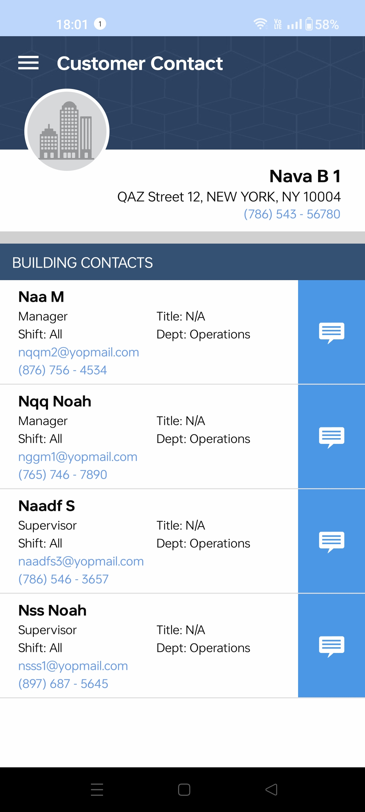 - Name of the contact - Role of the contact - Shift of the contact - Title - If nothing is saved, N/A will appear - Dept - Department of the contact - Email address and Phone number associated, both are clickable fields - Message icon - To communicate with the contact selected
Settings
As you click on the settings from the side navigating tab 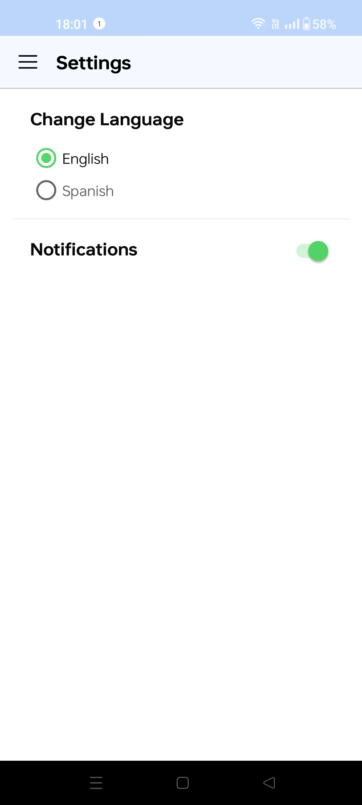 - Choose language - English will be selected by default, spanish is the other option and will affect over all application once selected - Notifications - You'll be able to receive notifications on mobile once you enable it - Make sure the device settings are also turned on to be able to receive them